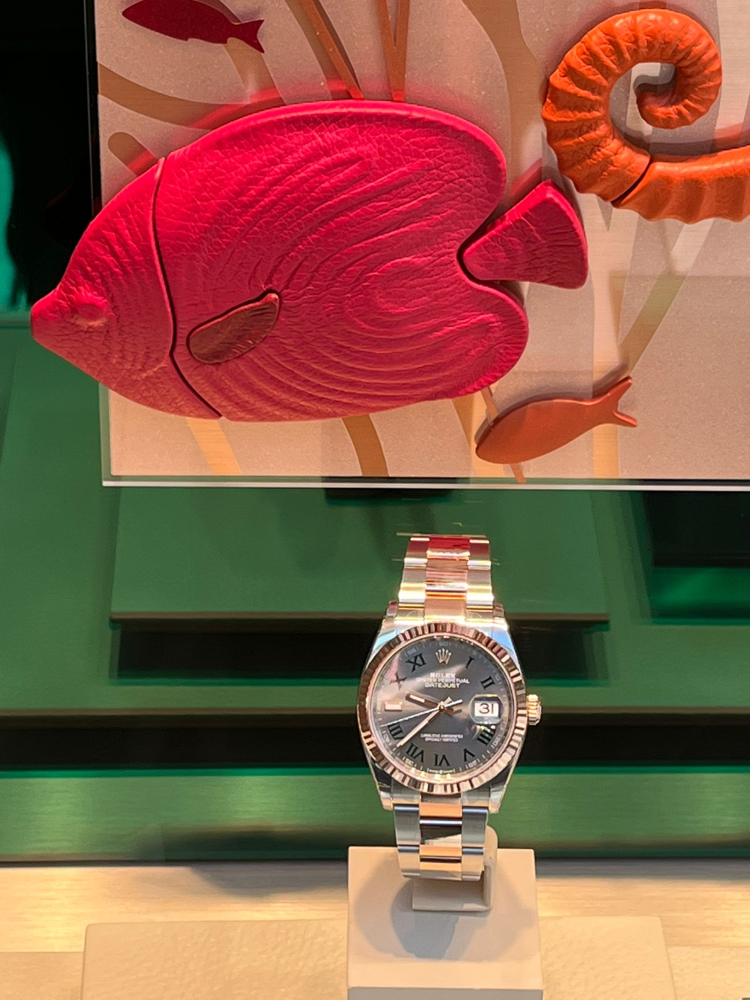
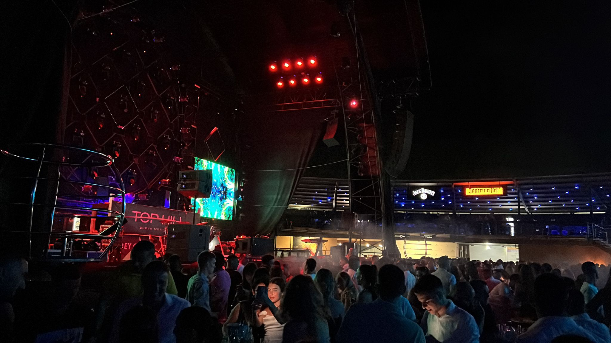
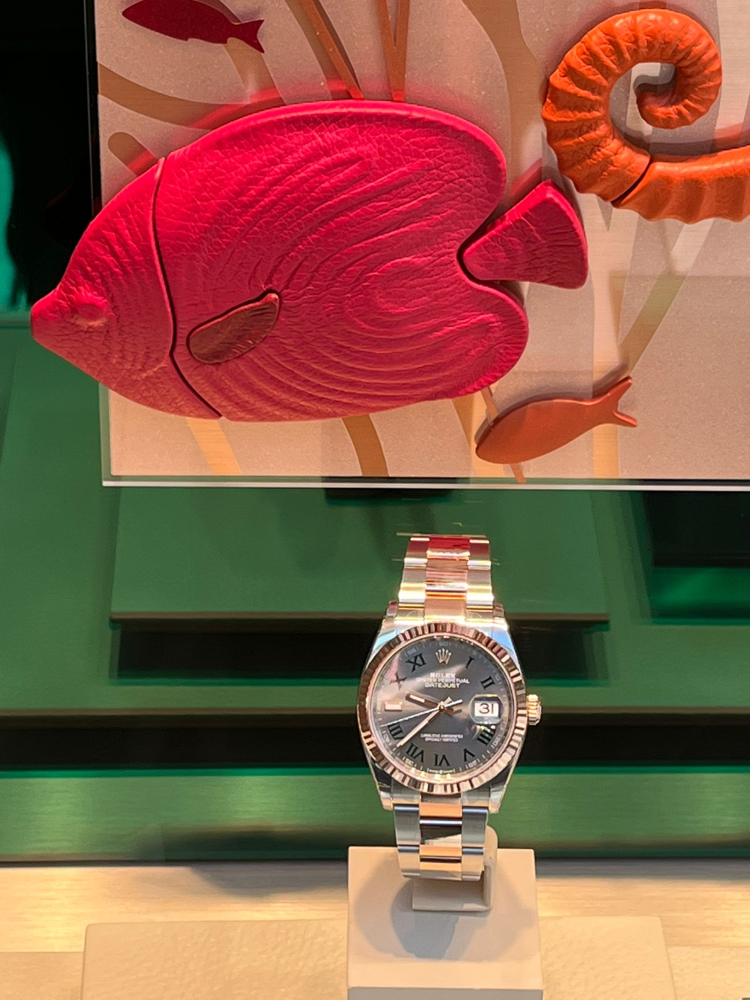
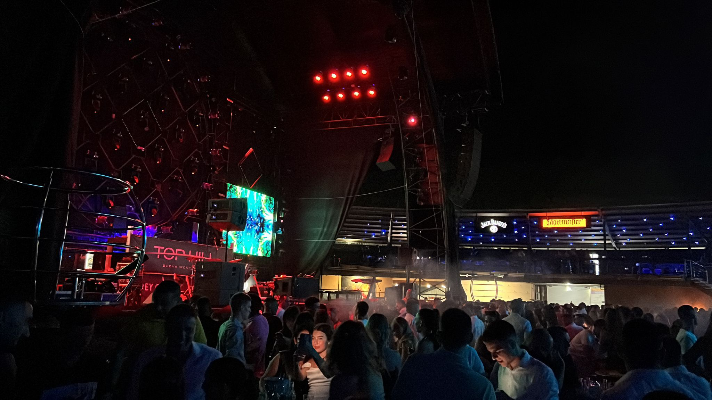

Ja sam Domagoj Nuić, trenutno studiram na Grafičkom fakultetu u Zagrebu, a u slobodno vrijeme strastveno pratim nogomet i uživam u svemu vezanom za automobile. Rođen sam 5. rujna 2003. godine i ovdje ćete pronaći više o mojim interesima. Nadam se da ćete uživati u istraživanju sadržaja koji sam pripremio.
 


